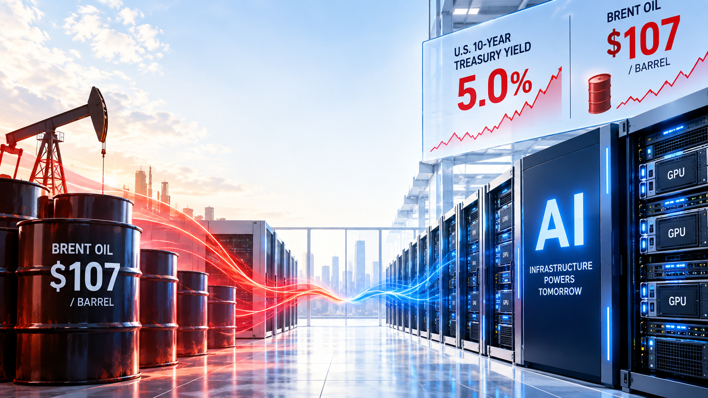
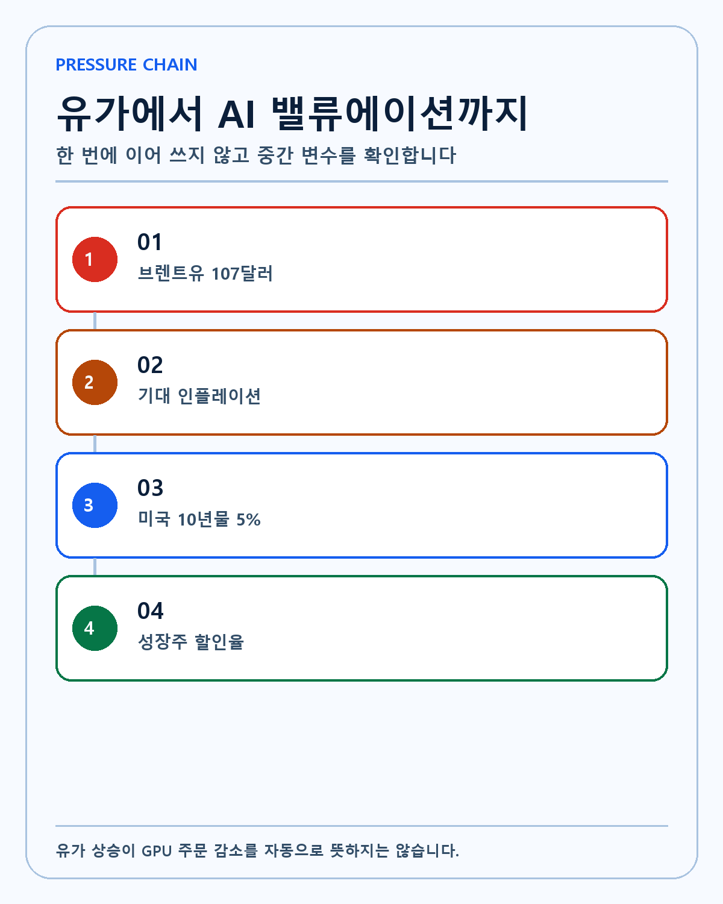
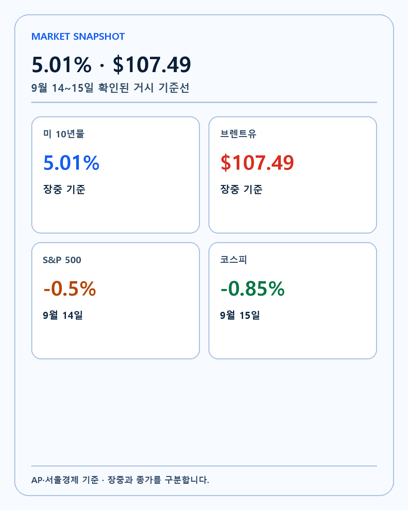
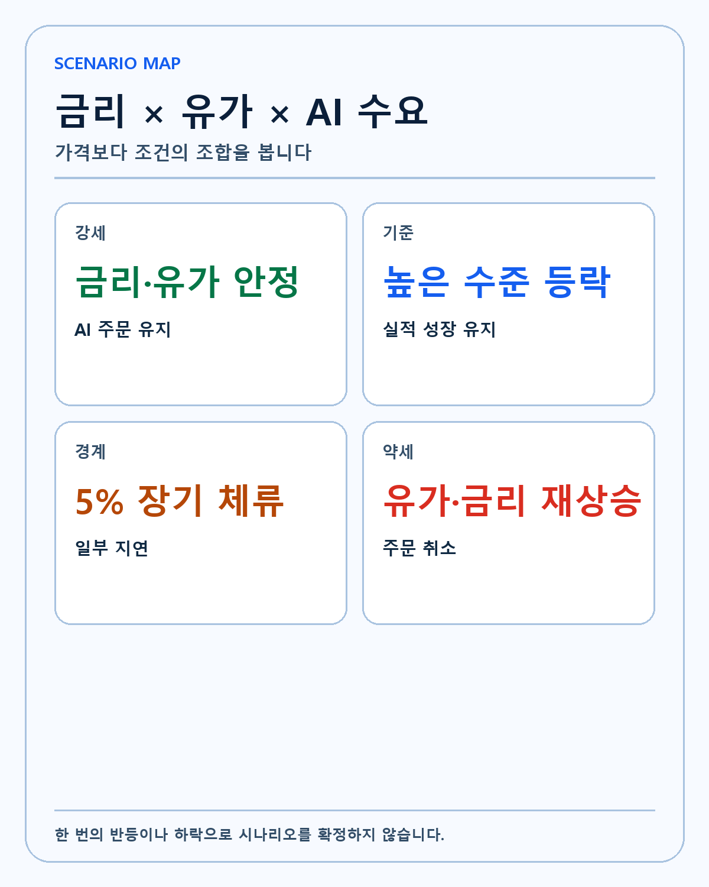
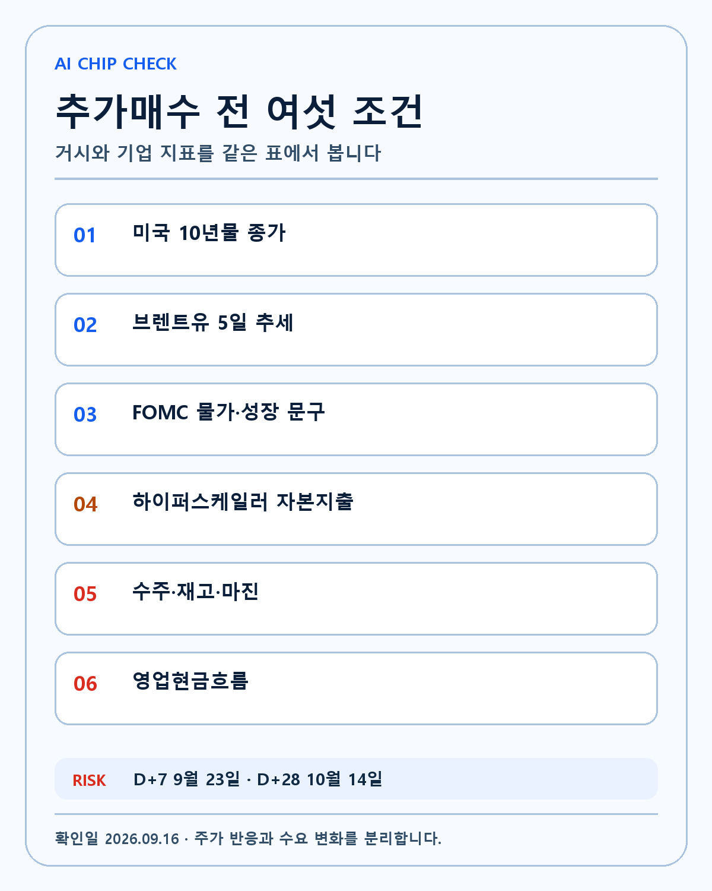

OIL · YIELD · AI CHIPS
미국 10년물 5%와 브렌트유 107달러 심층 분석: AI 반도체·코스피 밸류에이션의 연결고리
유가와 장기금리의 동시 상승을 NVIDIA·Broadcom·Micron과 한국 반도체의 할인율·수요·마진·현금흐름으로 나눠 봅니다.
유가와 장기금리가 동시에 오른 구간에서 NVIDIA·Broadcom·Micron과 한국 반도체를 어떤 순서로 확인해야 하는가? 같은 주제의 네이버 글을 늘여 쓴 문서가 아니라 작동 원리, 반대 논리, 무효화 조건과 후속 검증을 독립적으로 구성한 리서치입니다. 작성·검증 기준일은 2026-09-16입니다.

5%와 107달러가 같은 화면에 들어왔습니다

FACT. AP의 9월 15일 유가·채권시장 업데이트는 미국 10년물 국채 수익률이 전일 4.97%에서 5.01%로 올랐고 브렌트유가 배럴당 107.49달러까지 상승했다고 전했습니다. 전날 종가는 105.68달러였습니다.
왜 중요한가. 유가와 장기금리가 동시에 오르면 AI 기업에는 두 개의 부담이 겹칩니다. 데이터센터의 전력·운송·건설비가 올라가고, 먼 미래 이익을 현재 가치로 바꾸는 할인율도 높아집니다. 그래서 매출이 빠르게 늘어도 같은 이익에 시장이 부여하는 배수가 낮아질 수 있습니다. 이 연결이 실제 경제적 가치가 되려면 발표 다음 단계에서 반복되는 데이터가 필요합니다.
반대 논리. 하루 이틀의 5% 돌파만으로 장기 상승 추세가 끝났다고 단정할 수는 없습니다. 금리가 5% 위에서 머무는지, 유가 충격이 기업 주문과 소비에 실제로 전가되는지가 더 중요합니다. 한 방향의 설명만 남기면 가격은 설명할 수 있어도 투자 가설은 검증할 수 없습니다.
UNKNOWN. FOMC 결정 뒤 장기금리가 안정될지와 브렌트유의 100달러 이상 체류 기간은 아직 확정되지 않았습니다. 회사·정부·독립 연구의 후속 자료가 나올 때까지 이 항목은 모른다고 표시합니다.
확인 행동. 수익률 숫자 하나보다 10년물의 종가·실질금리·기대 인플레이션을 함께 확인합니다. 같은 기준을 다음 업데이트에도 적용해 판단이 결과에 끌려가지 않도록 합니다.
유가가 AI 반도체에 닿는 경로
FACT. 유가 상승은 소비자물가와 기업 비용에 영향을 주고 중앙은행의 완화 여지를 줄일 수 있습니다. 장기금리 상승은 NVIDIA·Broadcom·Micron처럼 미래 성장 기대가 큰 종목의 할인율에 즉시 반영됩니다.
왜 중요한가. AI 수요가 사라졌다는 뜻은 아닙니다. 다만 고객이 GPU·네트워크·메모리 주문을 늘리는 속도와 데이터센터를 짓는 자본비용 사이의 간격이 좁아집니다. 프로젝트 내부수익률이 낮아지면 일부 후순위 증설은 늦춰질 수 있습니다. 이 연결이 실제 경제적 가치가 되려면 발표 다음 단계에서 반복되는 데이터가 필요합니다.
반대 논리. 하이퍼스케일러의 현금창출력과 전략적 필요가 충분히 크면 금리 상승에도 핵심 AI 투자는 유지될 수 있습니다. 에너지 효율이 높은 신제품은 전력비 상승기에 오히려 교체 수요를 만들 수 있습니다. 한 방향의 설명만 남기면 가격은 설명할 수 있어도 투자 가설은 검증할 수 없습니다.
UNKNOWN. 각 고객의 2027년 AI 자본지출 중 취소 가능 물량과 이미 계약된 물량의 비중은 공개 자료만으로 정확히 알 수 없습니다. 회사·정부·독립 연구의 후속 자료가 나올 때까지 이 항목은 모른다고 표시합니다.
확인 행동. 클라우드 고객의 자본지출 가이던스, 공급계약과 실제 데이터센터 가동 시점을 따로 기록합니다. 같은 기준을 다음 업데이트에도 적용해 판단이 결과에 끌려가지 않도록 합니다.
AI 개발 속도 논쟁과 수요를 구분합니다

FACT. AP의 9월 14일 미국시장 마감 정리는 AI 업계 지도자들의 개발 속도 완화 요구 뒤 AI 관련주가 하락했다고 전했습니다. 같은 날 S&P500은 0.5%, 나스닥은 0.6% 내렸습니다.
왜 중요한가. 정책과 안전 논쟁은 밸류에이션 위험을 높이지만, 그 자체가 GPU 출하나 HBM 주문 취소를 뜻하지는 않습니다. 헤드라인 충격과 실물 수요의 변화 사이에 계약·납기·재고라는 중간 단계가 있습니다. 이 연결이 실제 경제적 가치가 되려면 발표 다음 단계에서 반복되는 데이터가 필요합니다.
반대 논리. 규제 논의가 실제 허가 지연, 전력 연결 제한이나 대형 모델 훈련 제한으로 구체화되면 수요 경로가 달라질 수 있습니다. 한 방향의 설명만 남기면 가격은 설명할 수 있어도 투자 가설은 검증할 수 없습니다.
UNKNOWN. 현재 발언이 법안과 집행 일정으로 이어질지, 어느 국가와 고객군에 먼저 적용될지는 UNKNOWN입니다. 회사·정부·독립 연구의 후속 자료가 나올 때까지 이 항목은 모른다고 표시합니다.
확인 행동. 주가 반응을 사실로 기록하되 다음 실적의 데이터센터 매출·수주잔고·재고 변화로 교차검증합니다. 같은 기준을 다음 업데이트에도 적용해 판단이 결과에 끌려가지 않도록 합니다.
한국 반도체도 같은 할인율을 받습니다
FACT. 서울경제의 9월 15일 코스피 마감 정리는 코스피가 6,627.26으로 0.85% 하락했고 외국인과 기관의 합산 순매도가 약 2조5천억원이었다고 전했습니다. 삼성전자는 0.20%, SK하이닉스는 0.41% 내렸습니다.
왜 중요한가. 한국 메모리 기업은 AI 서버 수요의 수혜를 받으면서도 원화, 외국인 수급, 미국 금리와 원유 수입 비용에 동시에 노출됩니다. 미국 기술주와 같은 날 움직였다는 이유만으로 기업 펀더멘털이 같은 속도로 나빠졌다고 볼 수는 없습니다. 이 연결이 실제 경제적 가치가 되려면 발표 다음 단계에서 반복되는 데이터가 필요합니다.
반대 논리. 고대역폭메모리의 공급 부족과 높은 계약 가격이 유지된다면 단기 거시 충격보다 이익 증가가 더 클 수 있습니다. 한 방향의 설명만 남기면 가격은 설명할 수 있어도 투자 가설은 검증할 수 없습니다.
UNKNOWN. 외국인 매도가 단기 위험회피인지 반도체 이익 고점 판단인지 현재 하루 수급으로는 구분하기 어렵습니다. 회사·정부·독립 연구의 후속 자료가 나올 때까지 이 항목은 모른다고 표시합니다.
확인 행동. 삼성전자·SK하이닉스의 HBM 출하, 평균판매가격, 재고일수와 환율 효과를 다음 실적에서 확인합니다. 같은 기준을 다음 업데이트에도 적용해 판단이 결과에 끌려가지 않도록 합니다.
NVIDIA·Broadcom·Micron을 같은 이유로 보지 않습니다
FACT. 세 기업은 모두 AI 인프라에 연결되지만 NVIDIA는 가속컴퓨팅 플랫폼, Broadcom은 맞춤형 가속기와 네트워킹, Micron은 메모리 공급 사이클의 비중이 큽니다.
왜 중요한가. 금리 충격이 같아도 이익에 전달되는 경로는 다릅니다. GPU 플랫폼의 소프트웨어 해자, 고객 맞춤형 칩의 계약 집중도, HBM 공급과 범용 메모리 가격을 따로 봐야 합니다. 이 연결이 실제 경제적 가치가 되려면 발표 다음 단계에서 반복되는 데이터가 필요합니다.
반대 논리. AI라는 한 묶음으로만 보면 분산처럼 보이는 세 종목이 실제로는 같은 하이퍼스케일러 자본지출에 집중될 수 있습니다. 한 방향의 설명만 남기면 가격은 설명할 수 있어도 투자 가설은 검증할 수 없습니다.
UNKNOWN. 고객별 계약 구조와 취소 조항, 신제품 전환기의 일시적 이중 주문 규모는 완전히 공개되지 않습니다. 회사·정부·독립 연구의 후속 자료가 나올 때까지 이 항목은 모른다고 표시합니다.
확인 행동. 종목별로 고객 집중도, 매출총이익률, 재고와 현금전환을 한 표에 놓고 비교합니다. 같은 기준을 다음 업데이트에도 적용해 판단이 결과에 끌려가지 않도록 합니다.
FOMC에서 볼 것은 점 하나가 아닙니다
FACT. 연준 FOMC 일정에 따라 이번 정책 결정과 기자회견이 예정돼 있습니다. 시장은 정책금리뿐 아니라 물가·성장 전망과 이후 경로를 함께 가격에 반영합니다.
왜 중요한가. 정책금리를 올리거나 내리는 한 번의 결정이 장기금리를 같은 방향으로 움직인다는 보장은 없습니다. 물가 전망이 높아지거나 국채 공급 부담이 남으면 10년물은 별도로 움직일 수 있습니다. 이 연결이 실제 경제적 가치가 되려면 발표 다음 단계에서 반복되는 데이터가 필요합니다.
반대 논리. 발표 직후 첫 반응은 포지션 청산 때문에 이후 방향과 다를 수 있습니다. 한 방향의 설명만 남기면 가격은 설명할 수 있어도 투자 가설은 검증할 수 없습니다.
UNKNOWN. 결정 이후 10년물이 5% 아래로 안정될지, 유가가 인플레이션 전망에 얼마나 반영될지는 발표 전에 확정할 수 없습니다. 회사·정부·독립 연구의 후속 자료가 나올 때까지 이 항목은 모른다고 표시합니다.
확인 행동. 성명서, 경제전망, 의장 답변과 다음 날 종가까지 네 단계를 나눠 확인합니다. 같은 기준을 다음 업데이트에도 적용해 판단이 결과에 끌려가지 않도록 합니다.
강세·기준·약세 시나리오

FACT. 강세는 브렌트유가 100달러 아래로 내려오고 10년물이 5% 아래에서 안정되는 동시에 AI 고객의 자본지출과 수주가 유지되는 경우입니다.
왜 중요한가. 기준 시나리오는 금리와 유가가 높은 수준에서 등락하지만 핵심 고객 주문이 이어져 실적 성장률은 둔화하지 않는 경우입니다. 약세는 유가 고착, 장기금리 추가 상승과 고객 지연이 함께 나타나는 경우입니다. 이 연결이 실제 경제적 가치가 되려면 발표 다음 단계에서 반복되는 데이터가 필요합니다.
반대 논리. 가격 반등만으로 강세 시나리오를 확정하지 않습니다. 반대로 하루 급락만으로 약세 시나리오를 확정하지도 않습니다. 한 방향의 설명만 남기면 가격은 설명할 수 있어도 투자 가설은 검증할 수 없습니다.
UNKNOWN. 각 시나리오의 확률은 FOMC와 다음 실적이 나온 뒤 갱신해야 합니다. 회사·정부·독립 연구의 후속 자료가 나올 때까지 이 항목은 모른다고 표시합니다.
확인 행동. 거시 지표와 기업 지표가 같은 방향으로 두 번 이상 확인될 때만 판단을 바꿉니다. 같은 기준을 다음 업데이트에도 적용해 판단이 결과에 끌려가지 않도록 합니다.
제가 지킬 여섯 조건

FACT. 저는 AI 반도체를 장기 핵심 기술로 보지만 가격과 사업을 분리합니다.
왜 중요한가. 첫째 10년물 종가, 둘째 브렌트유 추세, 셋째 하이퍼스케일러 자본지출, 넷째 수주와 납기, 다섯째 재고·마진, 여섯째 현금흐름을 확인합니다. 이 연결이 실제 경제적 가치가 되려면 발표 다음 단계에서 반복되는 데이터가 필요합니다.
반대 논리. 기술 해자가 강해도 할인율과 고객 투자여력의 영향을 완전히 피할 수는 없습니다. 한 방향의 설명만 남기면 가격은 설명할 수 있어도 투자 가설은 검증할 수 없습니다.
UNKNOWN. 현재 조정이 장기 기회인지 구조적 둔화의 시작인지는 아직 모릅니다. 회사·정부·독립 연구의 후속 자료가 나올 때까지 이 항목은 모른다고 표시합니다.
확인 행동. 펀더멘털이 유지되면 보유 논리는 유지하되 월급날 추가매수 전 여섯 조건을 다시 읽습니다. 같은 기준을 다음 업데이트에도 적용해 판단이 결과에 끌려가지 않도록 합니다.
할인율 충격과 이익 충격을 분리합니다
성장주가 하락할 때 시장은 흔히 모든 원인을 한 문장에 넣습니다. 그러나 할인율 상승으로 주가수익비율이 낮아지는 현상과 실제 주문이 줄어 이익 추정치가 낮아지는 현상은 다릅니다. 전자는 금리 안정만으로 일부 되돌릴 수 있지만 후자는 고객 계약과 공급망 데이터가 회복돼야 합니다. 따라서 주가 하락률만으로 어느 충격이 더 컸는지 결정하지 않습니다. 컨센서스 매출·영업이익 추정치, 장기금리와 기업별 가이던스를 같은 날짜에 저장해야 합니다.
에너지 비용의 직접·간접 노출
데이터센터 전력 계약은 현물 유가와 즉시 같은 비율로 움직이지 않습니다. 지역별 전력원, 장기 전력구매계약, 냉각 방식과 서버 효율이 비용을 바꿉니다. 유가가 높아도 전력 믹스와 계약이 다르면 고객별 증설 경제성은 달라집니다. 그래서 유가에서 GPU 주문까지 직선 화살표를 그리지 않습니다. 유가는 기대 인플레이션과 자본비용을 통해 간접 압력을 주고, 실제 데이터센터의 전력 조달과 건설 일정이 중간 변수를 만듭니다.
포트폴리오 집중을 점검하는 방법
NVIDIA와 Palantir 비중이 크다는 사실은 알고 있습니다. 저는 두 기업이 AI 시대의 핵심 플레이어라는 분석을 근거로 집중을 감수합니다. 다만 확신과 무관심은 다릅니다. 반도체·플랫폼·응용 소프트웨어가 같은 고객의 AI 예산에 묶여 있는지, 금리 상승 때 동시에 밸류에이션이 축소되는지 확인합니다. 기술 해자가 유지되는 동안 보유 논리는 유지하되, 한 산업의 자본지출 둔화가 전체 계좌에 미치는 영향을 금액으로 기록합니다.
관찰표
| 관찰 항목 | 강세 확인 | 경계 신호 | 무효화 신호 |
|---|---|---|---|
| 미국 10년물 | 5% 아래 안정 | 5% 부근 장기 체류 | 실질금리 추가 급등 |
| 브렌트유 | 100달러 아래 | 100~110달러 박스 | 공급 충격 장기화 |
| AI 수요 | 가이던스 유지 | 일부 납기 조정 | 주요 고객 주문 취소 |
| 현금흐름 | 마진·현금 증가 | 성장과 비용 동반 증가 | 성장 둔화·현금 악화 |
이 표는 가격 목표가가 아닙니다. 어떤 사실이 제 가설을 강화하거나 약하게 만드는지 사전에 정한 기록입니다.
시나리오와 무효화 조건
강세 시나리오는 핵심 지표가 실제 사용량과 현금흐름으로 이어지는 경우입니다. 기준 시나리오는 방향은 맞지만 전환 속도가 예상보다 느린 경우입니다. 약세 시나리오는 발표가 반복돼도 주문·승차·마진·비용 개선이 확인되지 않는 경우입니다. 공식 자료와 실제 운영 결과가 다르거나 경쟁자가 더 낮은 비용으로 같은 문제를 해결하면 기존 가설을 낮춥니다.
숫자를 읽는 방법
이 글의 숫자는 서로 다른 시점과 범위를 섞지 않았습니다. 장중 수치와 종가, 회사 자체 집계와 독립 연구, 관심 등록과 유료 이용을 각각 다른 칸에 둡니다. 큰 숫자가 제목에 들어가더라도 분모·기간·측정 조건이 다르면 직접 비교하지 않습니다.
투자 가설과 가격의 경계
저는 미래에 더 필요해질 기술과 장기적 자산 증식을 추구합니다. 판단 순서는 기술, 해자, 창업자와 운영 주체, 성장률, 현금흐름입니다. 주가가 먼저 움직여도 이 순서를 건너뛰지 않습니다. 펀더멘털이 유지되면 장기 보유 논리는 유지하지만, 기술 경쟁력이 약해지거나 경영진이 장기 비전에서 이탈하면 가설을 다시 씁니다.
검증 일정
D+7인 2026년 9월 23일에는 첫 후속 데이터와 시장 반응을 확인합니다. D+28인 2026년 10월 14일에는 실제 사용·수요·비용 또는 공시가 처음 가정과 같은 방향인지 확인합니다. 결과가 없으면 긍정이나 부정을 채워 넣지 않고 UNKNOWN을 유지합니다.
출처 사용 원칙
회사와 정부 원문은 발표 내용 확인에 사용하고, 독립 언론과 연구는 범위·반대 근거·현장 영향을 교차검증하는 데 사용합니다. 링크는 독자가 직접 원문으로 이동할 수 있게 본문 문장에 연결합니다.
결론
이번 조정에서 제가 가장 경계하는 실수는 주가 하락을 곧바로 AI 수요 붕괴로 번역하는 것입니다. 유가와 금리는 현재 가치 계산을 바꾸지만 기업의 기술력과 계약을 하루 만에 없애지는 않습니다. 반대로 좋은 기술이라는 이유로 자본비용 상승을 무시하는 것도 위험합니다. 저는 NVIDIA·Broadcom·Micron을 같은 AI 바구니가 아니라 서로 다른 해자와 현금흐름 구조를 가진 기업으로 다시 나눠 보겠습니다. 이번 글의 목적은 내일 가격을 맞히는 것이 아니라 다음 판단을 틀리지 않게 만드는 확인 순서를 남기는 것입니다.
이 글은 개인 투자 기록이며 특정 종목이나 금융상품의 매수·매도를 권유하지 않습니다.
작성 방법
2026년 9월 16일 기준 공식 자료와 독립 자료를 함께 보고 사실·해석·반대 근거·UNKNOWN을 분리했습니다.
개인 투자 기록이며 특정 종목의 매수·매도를 권유하지 않습니다.